复习提纲全解
计算机视觉 考试大纲复习整理
专题——引言
格式塔法则（Gestalt law）（理解每条意思，能简单解释）
【答】
（1）接近性(law of proximity)：距离上相近的物体容易被知觉组织在一起。
（2）连续性(law of continuity)：具有连续性或共同运动方向的刺激，容易被看成一个整体。
（3）封闭性(law of closure)：人们倾向于将缺损的轮廓加以补充，使知觉上称为一个完整的封闭图形。
（4）共势原则(law of common fate)：如果物体沿着相似的光滑路径，或具有相似的排列模式，人眼会将其识别为一类物体。
（5）对称性原则(law of symmetry)：人的意识倾向于将物体识别为沿某点或某直线对称的形状。
（6）相似性原则(law of similarity)：人们倾向于认为，相似的事物之间的相关性比不相似事物之间的相关性更强。
专题——边缘
一、模板卷积
1.给一个图像与一个模板，会计算卷积结果。
【答】
（略）
二、边缘检测
1.Origin of Edges——四种最主要的不连续(discontinuity)
【答】
（1）表面法向不连续性(surface normal discontinuity)
（2）深度不连续性(depth continuity)
（3）表面颜色不连续性(surface color discontinuity)
（4）照明不连续性(illumination discontinuity)
2.边缘检测的基本思想
【答】
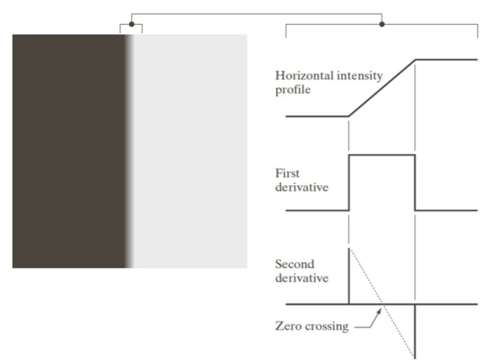
函数导数反映了图像灰度变化的显著程度。边缘处灰度变化最为剧烈，因此对应的一阶导数值也最大。可以通过求解一阶导数的极大值，或二阶导数的变号零点，实现边缘检测。
3.基于一阶的边缘检测（有哪些）
【答】
（1）Roberts交叉算子
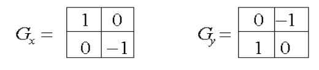
（2）Sobel算子
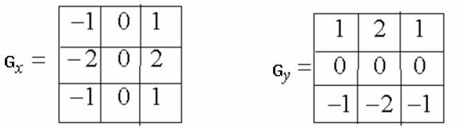
（3）Prewitt算子——运算较快
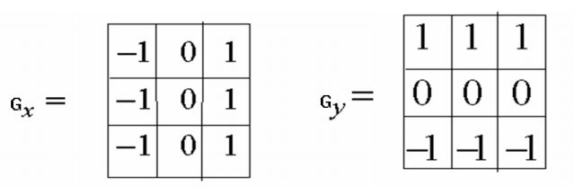
4.基于二阶的边缘检测（有哪些）
【答】
（1）Laplacian算子
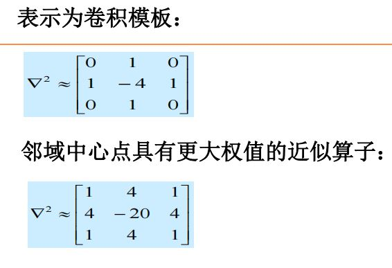
（2）LoG(Laplacian of Gaussian)算子
·先使用高斯滤波器进行平滑处理，再用拉普拉斯算子计算二阶导数。
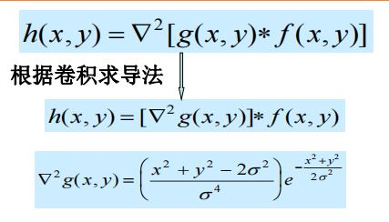
5.Laplacian算子
【答】
6.LoG算子（Marr & Hildreth算子）：为什么要加G
【答】
（1）LoG算子：L表示使用Laplacian卷积核计算二阶导数。
（2）首先使用Gaussian算子滤波，意义是：能缓解直接用拉普拉斯滤波器计算二阶导数导致图像噪声更明显的问题。
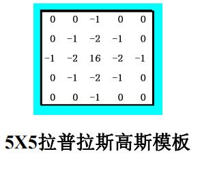
7.Canny边缘检测（理解Canny边缘检测方法，能写出该方法的关键步骤，能说出其中两个阈值的意义）
【答】
（1）Canny边缘检测算法的步骤：
①用高斯滤波器平滑图像。
②用一阶偏导有限差分，计算梯度的复制和方向。
·\(x\)方向梯度（右侧减去左侧）：\(G_x \approx \frac{1}{2}(S[i, j + 1] - S[i, j] + S[i + 1, j + 1] - S[i + 1, j])\)
·\(y\)方向梯度（上方减去下方）：\(G_y = \frac{1}{2}(S[i, j] - S[i + 1, j] + S[i, j + 1] - S[i + 1, j + 1])\)
·梯度幅值：\(M[i, j] = \sqrt{G_x^2[i, j] + G_y^2[i, j]}\)
·梯度方向：\(\theta[i, j] = arctan\frac{G_y[i, j]}{G_x[i, j]}\)
③对梯度幅值进行非极大值抑制(NMS, Non-Maximum Suppression)
·梯度角离散化，对应于圆的四个扇区之一。
·设当前像素点梯度轴线沿某个方向\(\vec{a}\)，则当前像素点应该跟\(\vec{a}\)法向上的两个邻接点进行梯度幅值比较。如果当前像素点的梯度幅值不是三个点中的极大值，则将当前像素点的梯度幅值设为\(0\)。
④使用双阈值算法进行边缘检测和链接。
（2）两个阈值的意义：
·高阈值：可以去除噪点，保留边缘。
·低阈值：在高阈值图像中可能出现边缘不连续的情况，此时可以在低阈值边缘图中相应像素点的\(8\)邻域搜索边缘点，进行边缘填充。
专题——曲线
Hough变换
1.用来解决什么问题？
【答】Hough变换解决的是曲线拟合问题。
2.基本思想
【答】Hough变换的基本思想是基于投票进行参数估计。图像中每一点对参数组合进行表决，得票多得参数组合为胜者。
3.会用图示解释Hough变换做直线检测的具体原理。
【答】
（1）采用极坐标表示直线的参数方程，即\(\rho = x cos\theta + y sin\theta\)
在参数坐标\((\rho, \theta)\)组成的空间中，直线上一点\((x, y)\)对应于参数空间中一条曲线；一组直线参数\((\rho_i, \theta_i)\)，在参数空间中对应于一点。
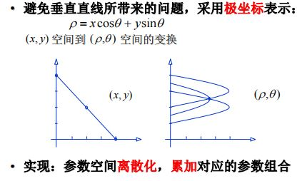
（2）将参数空间离散化为若干网格，每个网格视为一个初始值为\(0\)的累加器。如果图像空间中某点\((x_i, y_i)\)满足方程\(\rho_m = x_icos\theta_m + y_i sin\theta_m\)，则对\((\rho_m, \theta_m)\)所处网格的累加器加\(1\)。
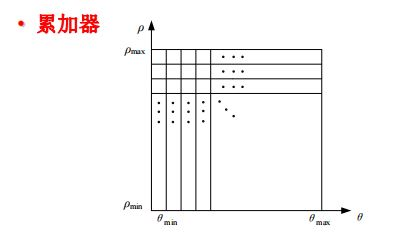
（3）累加计数最大的网格对应的参数，即为所求直线的参数。
4.对于直线检测或圆的检测，能写出算法基本步骤
【答】
（1）直线检测算法基本步骤
①适当地量化参数空间。
②假定参数空间的每一个单元都是一个累加器，将累加器初始化为\(0\)。
③对于图像空间的每一点，在它所满足的参数方程的对应累加器上加\(1\)。
④累加器阵列最大值对应的参数，即为模型的参数。
（2）圆检测算法基本步骤
①圆弧的参数有圆心坐标\((a, b)\)和半径\(r\)。设\(\theta\)是边缘点的梯度角，则\(b = atan\theta - xtan\theta + y\)形成了关于\(a, b\)的参数方程。量化关于\(a, b\)的参数空间到合适精度。
②初始化所有累加器为\(0\)。
③计算图像边缘点的梯度幅度\(G_{mag}(x, y)\)和梯度角度\(\theta(x, y)\)。
④若边缘点参数坐标满足\(b = atan\theta - xtan\theta + y\)，则参数坐标对应的累加器加\(1\)。
⑤拥有最大值的累加器对应坐标，即为图像空间中的圆心坐标。
⑥得到圆心坐标后，容易反求圆弧半径\(r\)。
5.参数空间离散化，精度低或高分别有什么不好？
【答】
①精度过低：某一个箱子中含有大量投票，即图像空间中的许多直线都对应到参数空间中某一个箱子，从而无法准确的估计出每一条直线。
②精度过高：因为数据的不完美使得很多投票被分散到相邻的箱中，从而会漏检很多直线。
专题——局部特征Local Feature
一、Harris角点检测
1.知道基本思想。
【答】Harris角点检测的基本思想是：我们应该通过一个小型窗口，方便地识别出角点。对于角点而言，窗口向任意方向的移动，都会导致图像灰度的大幅度变化。
2.会推导公式：\(E(u, v) \approxeq [u \ v] M \begin{bmatrix}u \\ v \end{bmatrix}\)
【答】
假设窗口在\(x, y\)方向上分别有较小的位移\(u, v\)，则发生位移后的像素变化之和：
\(E(u, v) = \sum_{x, y}w(x, y)[I(x + u, y + v) - I(x, y)]^2 =\newline \sum_{x, y}w(x, y)[I(x, y) + uI_x(x, y) + vI_y(x, y) - I(x, y)]^2
\newline = \sum_{x,y}w(x, y)[uI_x(x, y) + vI_y(x, y)]^2 \newline =
[u \ v](\sum_{x, y}w(x, y)\begin{bmatrix}I_x^2 \ I_xI_y \\ I_xI_y \ I_y^2 \end{bmatrix})\begin{bmatrix}u \\ v\end{bmatrix}\)
令\(M = (\sum_{x, y}w(x, y)\begin{bmatrix}I_x^2 \ I_xI_y \\ I_xI_y \ I_y^2 \end{bmatrix})\)，即得待证公式。
3.理解\(M\)矩阵的\(\lambda_{max}\)、\(\lambda_{min}\)两个特征值代表的含义；其与Harris角点关系是什么？
【答】
（1）\(\lambda_{max}\)对应特征向量的方向，即为移动时灰度变化最快的方向；\(\lambda_{min}\)对应特征向量的方向，即为移动时灰度变化最慢的方向。
（2）\(\lambda_{max}, \lambda_{min}\)与Harris角点的关系：对于角点而言，\(\lambda_{max}, \lambda_{min}\)数值都很大，且沿任一方向移动，像素变化之和\(E(u, v)\)都会明显增大。
4.知道Harris对旋转具有不变性，对灰度仿射具有部分不变性，不具有尺度不变性。
【答】
（1）对于旋转变换而言，特征椭圆的方向随之旋转，但是特征值、椭圆形状是不变的，因此角点响应值\(R = det(M) - k(trace(M))^2\)也不变。
（2）对于灰度平移，角点检测不变，但是对于灰度按照倍数的放缩\(I = aI\)，角点的识别结果可能发生变化。
（3）尺度较小时的角点，在尺度放大后可能被识别为边缘。
二、SIFT描述子的计算
1.SIFT描述子Full version的基本计算步骤
【答】
（1）在探测到的特征附近选取一个\(16 \times 16\)的窗口，将其划分为\(4 \times 4\)的网格。
（2）计算每个网格的梯度方向直方图。
（3）\(16\)个网格\(\times 8\)个方向，形成了\(128\)维的特征描述子。
2.为什么使用梯度信息？好处？
【答】
（1）使用梯度信息的目的是形成关键点的特征描述子。
（2）好处：旋转不变性（图像旋转时，关键点的主方向随之旋转）、灰度不变性、尺度不变性、对温和的仿射变换具有不变性。
3.SIFT是如何实现旋转不变的？
【答】图像旋转时，关键点的主方向（关键点局部范围内像素的最主要梯度方向）也会相应旋转差不多相同的角度，从而实现旋转不变性。
三、大致理解实现尺度不变的原理
【答】
SIFT特征检测方法使用了高斯差分金字塔寻找不同尺度空间中的局部极大值，可以找到在不同尺度下具有相似特征的关键点，从而实现了算法对尺度的不变性。
专题——图像拼接 Image Stitching
一、图像拼接
实现两张图像自动拼接的几个基本步骤。
【答】
①从待拼接的两张图像中，寻找特征点（例如SIFT特征）
②寻找互相匹配的点对(corresponding pair)，常见的匹配方法有FLANN Matching等方法。
③使用匹配点对，计算变换矩阵\(T\)(Transformation/Homography)。矩阵\(T\)的作用是进行放射变换，是一个\(3 \times 3\)矩阵，其中只有\(6\)个未知量。由于每个点可以提供\(2\)个未知量，最少只需\(3\)个点即可计算\(T\)；点数的增多，可以增强结果的健壮性。
二、图象金字塔
1.如何理解拉普拉斯金字塔？从频率角度看，是什么？
【答】
（1）拉普拉斯金字塔相当于“高斯差值”金字塔，该金字塔的第\(i\)层存储的是高斯金字塔第\(i\)层与高斯金字塔第\(i + 1\)层的差距。
（2）从频率角度看，拉普拉斯金字塔将图像分解到不同的空间频带上，相当于带通滤波。
2.如何理解高斯金字塔？从尺度(scale)角度看，是什么？
【答】
（1）高斯金字塔是通过对图像不断进行高斯平滑和下采样而构建形成的。
（2）从尺度角度看，高斯金字塔相当于尺度的缩小。
三、RANSAC
1.Generally speaking，可以解决什么样的问题？
【答】
（1）在image stitching中，可以解决图像特征点匹配时的离群点问题。一般的匹配方法容易受到离群点的影响，RANSAC的基本思想是只使用“内点”计算transformation/homography。
（2）更一般而言，可以解决模型匹配的离群点问题，通过内点、外点的辨识，以及只使用内点计算参数，减少离群点对结果的影响。
2.理解其过程的核心思想
【答】
（1）内点与外点的划分：在一组包含“外点”的数据集中，通过不断迭代，寻找最优参数模型，不符合最优参数模型的点即被定义为“外点”。
（2）迭代步骤
①随机选取一组种子点，进行初始化的transformation估计。
②假设transformation是正确的，寻找落在transformation中的内点。
③根据第二步计算得到的内点，重新计算transformation。
④重复第2-3步，直到内点数量足够多（多于某个阈值\(d\)）。内点数量足够多时，使用所有内点重新计算最小平方估计。
（3）随着采样次数提升，降低失败率（对于每次采样所得least-square estimation，如果内点数量低于阈值\(d\)，即定义为失败）：
假设一次单独的采样获得\(n\)个点，\(w\)是内点的比例，进行了\(k\)次采样，则一次采样中\(n\)个点都是内点的概率为\(w^n\)，\(k\)次采样中，每次采样都失败（即：包含离群点）的概率为\((1 - w^n)^k\)。
因此，我们只需选取足够大的\(k\)，使得\((1 - w^n)^k\)低于目标失败率即可。
3.优点？
【答】
①RANSAC为许多模型匹配问题提供了一种普遍性的方法。
②容易实现，容易计算失败率。
4.基本步骤（迭代Loop）
【答】
①随机选取一组种子点，进行初始化的transformation估计。
②假设transformation是正确的，寻找落在transformation中的内点。
③根据第二步计算得到的内点，重新计算transformation。
④重复第2-3步，直到内点数量足够多（多于某个阈值\(d\)）。内点数量足够多时，使用所有内点重新计算最小平方估计。
5.outlier点比例给定的情况下，则\(k\)次采样（迭代）后计算成功的概率是？
【答】假设一次单独的采样获得\(n\)个点，\(w\)是内点的比例，进行了\(k\)次采样，则一次采样中\(n\)个点都是内点的概率为\(w^n\)，\(k\)次采样中，每次采样都失败（即：包含离群点）的概率为\((1 - w^n)^k\)。
因此，我们只需选取足够大的\(k\)，使得\((1 - w^n)^k\)低于目标失败率即可。
6.思考：RANSAC与Hough变换有什么共同之处？
【答】
都采用“计数”的策略，其中Hough变换是将参数空间离散化为不同网格，某点满足曲线方程，则方程对应于参数空间的网格累加器加\(1\)，累加计数最多的参数为“优胜”参数；而RANSAC是通过“内点”和“外点”进行计数，对于一个算出的transformation，内点足够多，就说明transformation足够好，可以停止迭代，是较好的参数，而如果内点不够多，就要继续迭代。
专题——主元分析与人脸识别
一、主元分析(PCA)
1.PCA方法的基本思想是最小化什么？
【答】PCA方法的基本思想是：最小化重构误差，即将低位表示重新转换为高维表示时，与原始高维表示之间的误差。
2.什么样的数据用PCA会比较有效？
【答】数据的维度太高，但是不同维度之间存在一定程度的关联，就适合使用主成分分析，获得这些高维度中蕴含的低位主要信息，从而实现降维，并最小化重构误差。
·例如图像数据，每个像素点就是一个维度；但是各像素点间存在各类联系，像素点间可能蕴含相互关联的模式特征。此时，“模式特征”的主要维度，少于图片中的实际维度。
·例如独热编码法表示的词向量模型，词向量往往有几万个维度，但是不同的词汇之间或多或少地存在关联，其“主要信息”的维度远远少于实际表示词向量时使用的维度。
3.优化目标函数\(a_1^TSa_1\)的推导。
【答】
①PCA的目的是将数据投影到\(d\)维空间，最大化投影值\(z_1 = a_1^Tx = \sum_{i = 1}^da_1^ix_i\)的方差\(var(z_1)\)。
②公式推导：
\(var(z_1) = E(z_1^2) - E^2(z_i) = E[(\sum_{i = 1}^da_1^ix_i)^2] - [E(\sum_{i = 1}^da_1^ix_i)]^2 \newline
= \sum_{i, j = 1}^da_1^ia_1^jE(x_ix_j) - \sum_{i, j = 1}^da_1^ia_1^jE(x_i)E(x_j)
\newline - \sum_{i, j = 1}^Da_1^ia_1^j[E(x_ix_j) - E(x_i)E(x_j)]\)
令\(S_{ij} = E(x_ix_j) - E(x_i)E(s_j)\)
则\(var(z_1) = a_1^TSa_1\)
其中\(a_1\)表示投影方向。
4.关于选取多少个特征向量构建子空间，常用什么方法？
【答】
可以通过计算贡献率，让贡献率高于某个阈值\(p\)，确定构建子空间时采用的特征向量个数\(k\)。贡献率即前\(k\)个特征值之和与所有特征值之和的比值：\(\alpha = \frac{\sum_{i = 1}^k\lambda_i}{\sum_{j = 1}^n \lambda_j}\)。
5.PCA分析与DCT离散余弦变换的相同之处？不同之处？
【答】
①相同之处：作用都是尽量寻找图像等数据中的主要信息，以较好地实现数据的有损压缩，减少有损压缩过程中的信息损失。
②不同之处：实现原理不同。离散余弦变换将图像分成不同频率的小块并进行量化，舍弃高频分量以实现压缩，保留低频分量用于图像重建；主成分分析则通过计算协方差矩阵，将其特征值作为特征向量，选择方差最大的方向进行投影。
6.怎么理解降维之后，还能重构再升维？
【答】降维后，获得的不同特征之间是正交的，它们蕴含了原有\(n\)维特征的大部分信息；而原有的\(n\)维特征看似维度高，实际上维度之间存在不弱的关联，这种“关联”信息就蕴含在“主成分”之中。因此，降维之后还能重构再升维，使得原始高维度的大部分信息得以保留。
二、特征人脸(Eigenface)
1.Eigenface是什么？Eigenface人脸识别方法的基本步骤。
【答】
（1）特征人脸是人脸图像训练集归一化后，通过主成分分析计算所得的一组特征向量。
（2）基本步骤：
①获取人脸图像的训练集，一般为整个人脸数据库。
②对所有人脸图像进行归一化处理。
③通过主成分分析方法，计算一组特征向量作为特征人脸，通常一百个特征向量就足够了。
④将每张人脸图像投影到由特征人脸张成的子空间中，得到图像在子空间中的坐标。
⑤对输入的待测图像，归一化后映射到特征脸子空间中，然后使用某种距离度量，描述人脸图像的之间相似性。
2.会写基于Eigenface的人脸重构公式（线性加权和）
【答】
（1）设输入图像为\(x\)，均值图像为\(m\)，特征人脸图像为\(\Phi_1, \cdots, \Phi_n\)，输入图像投影到特征人脸张成的子空间中的坐标为\((\alpha_1, \cdots, \alpha_n)\)，则重构公式为：
\(x = m + \alpha_1 \Phi_1 + \cdots + \alpha_n \Phi_n\)
（2）设前\(k\)个特征向量组成矩阵\(A = [v_1, \cdots, v_k]\)，则获取图像投影坐标的公式为\(y_f = A^Tf\)，重构公式为\(\hat{f} = Ay_f\)。
3.理解利用人脸重构进行人脸检测的原理。如果一幅白噪声图像用Eigenface去重构，预计结果会是怎么样？原因是？
【答】
（1）利用人脸重构进行人脸检测的原理：
①将待测人脸图像归一化后，投影到由特征人脸张成的子空间中，待测得到图像在子空间中的坐标。
⑤使用某种距离度量，描述待测人脸图像投影坐标与已有人脸库中图像的投影坐标之间的相似性，图片库中相似度最高的图像即对应于识别结果。
（2）白噪声图像用特征人脸重构，预计结果为：随着特征子空间维数的增加，重构图片从有淡淡的人脸痕迹到越来越接近白噪声图片。原因是随着子空间维数的增加，子空间特征值的贡献率也逐步增加，从而重构时能恢复的白噪声图片信息也越来越多。
4.思考：Eigen-X应用过程重点需要注意什么？
【答】
（1）Eigenface
按照实验操作过程来看，我认为数据预处理最重要。数据预处理主要需要：
①根据人脸中心位置，对人脸进行缩放、平移、旋转，使所有训练图像于模板对齐。
②根据模板，切割出人脸区域，去除背景。
③需要通过直方图均衡化、直方图拉伸等方式，对灰度值作归一化。
如果图片预处理较为统一、整齐，则特征人脸重构效果好，损失小；如果图片预处理不充分或效果差，则特征人脸重构时也会重构出一些无效信息，比如人脸方向不同时，可能重构出一个人的头部朝左边偏，但是图片中存在向右倾斜的人脸虚影的情况。
（2）其他Eigen-X的注意事项也主要集中在数据预处理部分，数据的归一化和对齐程度，对特征值分解的效果影响较大。
5.除上课提到的人脸、手型、人体形状之外，试举例，你觉得哪些数据可能比较适合用EigenX方法去建模？
【答】
（1）信息检索——隐形语义索引/分析(Latent Semantic Indexing/Analysis)
矩阵由文档和词语组成，在矩阵上应用SVD，会构建多个奇异值，奇异值分别代表文档的概念和主题，可用于更高效的文档搜索。
（2）推荐系统。利用奇异值分解，从数据中构建一个主题空间，并在主题空间构建计算项之间的相似度。
专题——光流Optical flow
1.光流解决的是什么问题？
【答】光流即空间中运动物体在成像平面上的移动速度，解决的是相邻帧之间的correspondence问题，即给定图像\(H(x, y, t)\)中的一个像素点，寻找图像\(I(x, y, t + 1)\)中的对应像素，形成匹配。
2.光流三个基本假设是什么？
【答】
（1）亮度恒常性(brightness constancy)：同一个物点，在不同帧上的亮度应相同，即\(I(x + u, y + v, t + 1) = H(x, y, t)\)。
（2）空间一致性(spatial coherence)：属于同一表面的邻近点应具有较为相似的运动。
（3）微小运动(small motion)：相邻两帧之间的运动较小。
3.对于以下一个点的约束等式，会自己推导：
\(0 = I_t + \nabla I\cdot [u \ v]\)
【答】
·由微小运动条件：
\(I(x + u, y + v) = I(x, y) + \frac{\partial I}{\partial x}u + \frac{\partial I}{\partial y}v + O(u^2) + O(v^2)\)
·舍弃高阶项，得到：
\(I(x + u, y + v) \approx I(x, y) + \frac{\partial I}{\partial x}u + \frac{\partial I}{\partial y}v\)
·由亮度恒常性：\(0 = I(x + u, y + v) - H(x, y) \approx I(x, y) + I_x u + I_yv - H(x, y) = I_t + \nabla I \cdot[\frac{\partial I}{\partial x}, \frac{\partial I}{\partial y}]\)
即：\(I_xu + I_yv = -I_t\)
4.哪些位置的光流比较可靠？为什么？
【答】
角点处的光流最可靠，原因是角点的运动信息能够通过角点邻域完全确定；其次，边界的光流也比较可靠，因为边界的不连续性有助于确定边界的运动信息。
专题——物体识别
一、Visual Recognition
1.基本任务大概可以分为哪些？
【答】分类、单一物体检测、事件识别、图像分割等。
2.都有哪些挑战因素？
【答】
（1）视角。不同视角对物体识别可能产生影响。
（2）光照条件。光照条件不同，同一物体的识别结果可能发生变化。
（3）尺度。比如小矮人和巨人都是“人”的类别，同时将他们准确识别出来有一定的挑战。
（4）扭曲。物体成像扭曲给识别带来挑战。
（5）遮挡(occlusion)。物体被部分遮挡，给识别任务带来挑战。
（6）背景杂斑(background clutter)：待跟踪的目标周围有非常相似的目标，对跟踪造成干扰。
（7）类内方差。比如“椅子”这一类物体，可能有不同的颜色和结构。
3.理解Generalization error中模型带来的Bias与variance，以及模型复杂度跟overfit, underfit的关系。
【答】
（1）泛化误差(Generalization error)中，偏差(bias)和方差(Variance)存在tradeoff的关系。若模型太简单，则模型因为偏差太大、灵活性不足而不准确；若模型太复杂，则模型因为方差太大、对训练数据过度敏感而不准确。
（2）overfit是指：模型太复杂，以至于拟合了数据中的不相关特征（噪声）；underfit是指：模型太简单，不足以表示所有相关的语义信息。
二、基于卷积全局优化的物体分类
1.会简单推导并理解以下公式含义：
\(\hat{y} = softmax(Wx), c_{pred} = argmax(\hat{y})\)
【答】
（1）公式一：
·矩阵\(W\)是一个维度为[类别个数，图像向量分量个数]的特征提取器，每一个行向量分别是一类物体的特征提取器，行向量与图像向量内积的结果，反映了对物体属于当前类别的概率的预测。
·特征提取器\(W\)对图像向量\(x\)进行映射后，得到的是图像属于各个类别的概率向量。概率向量应满足每个分量都在\([0, 1]\)中，且各分量之和恰好为\(1\)，但是向量\(y = Wx\)不能保证满足上述两个条件。
·softmax函数通过\(a_i = \frac{e^{y_i}}{\sum_je^{y_j}}\)，保证获得的向量\(a\)满足概率向量的两个性质。
（2）公式二：概率向量的最大分量所属类别，即对输入图像预测的类别。
2.Softmax的作用？
【答】特征提取器\(W\)对图像向量\(x\)进行映射后，得到的是图像属于各个类别的概率向量。概率向量应满足每个分量都在\([0, 1]\)中，且各分量之和恰好为\(1\)，但是向量\(y = Wx\)不能保证满足上述两个条件。
softmax函数通过\(a_i = \frac{e^{y_i}}{\sum_je^{y_j}}\)，保证获得的向量\(a\)满足概率向量的两个性质。
3.W矩阵是什么组成的？含义是什么？
【答】
（1）W矩阵的组成：
①假设图像被向量化规模\((1024, 1)\)的图像向量，共有\(10\)类，问题目标是判断图像所属的类别。
②此时，\(W\)矩阵的形状为\((10, 1024)\)，即\(10\)个含\(1024\)个分量的行向量。
（2）含义：每个行向量恰好是一类物体的特征提取器。通过行向量与图像向量求内积，可以获得对图像属于当前类别的概率的预测；再比较“概率预测值”的最大值，最大值所属类别即为预测的物体类别。
专题——深度学习
一、深度学习
1.怎么理解被称为end-to-end的学习？
【答】端到端学习是指：整个学习的流程并不进行人为的子问题划分，而是完全交给深度学习模型，直接学习从原始数据到期望输出的映射。
2.神经网络的学习/训练，数学上本质是求解神经网络的什么？
【答】本质是求解神经网络的参数，包括权重和偏置。
3.会写出基于梯度下降法的学习框架
【答】一个batch的数据输入神经网络->前向传播->损失计算->反向传播与参数更新。
二、BP反向传播算法
1.BP算法作用是计算什么？理解“梯度下降法”与BP算法的关系。
【答】
（1）BP算法的作用是：根据损失计算各参数的梯度。
（2）BP算法通过使用“梯度下降法”，使得参数沿着梯度的反方向下降一段距离，从而让损失函数数值下降。
2.给一个计算公式，会画出计算图，并根据给定的初始值计算梯度反向传播的过程(正向与反向) 【答】 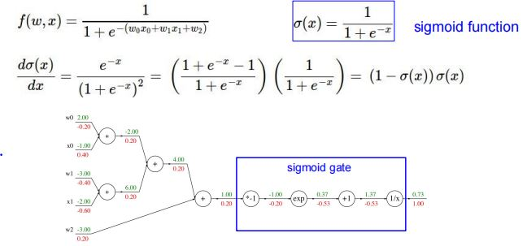
三、CNN
1.与全连接网络相比，CNN在哪几个方面做了重要改变？为什么这么改？
【答】
（1）局部连接。许多重要的pattern都是局部特征，比整个图片的规模小很多。
（2）参数共享，即使用一个卷积核卷积整个特征图。原因是相同的pattern可能出现在不同的位置。
（3）下采样。原因是像素点的下采样不会改变物体。
2.卷积层的作用是什么？卷积层主要利用哪两个技巧减少模型参数？
【答】
（1）卷积层的作用是提取输入图片的信息。前面的卷积层主要提取边缘、角点等局部、低维度信息，随着卷积层数的增多，后续卷积层提取的特征维度更高、涉及范围更广。
（2）局部连接、参数共享。
3.自己会计算第一个卷积层的权重(weight)数量（注意: 权重数与连接数的差别）
【答】
权重数量 = 卷积核高度 × 卷积核宽度 × 通道数
四、关于训练
1.batch技巧是指什么? 怎么理解该方法？
【答】
（1）训练神经网络时，按批次把数据传入神经网络进行前向传播和反向传播，常见的batch size有32, 64, 128等。
（2）该方法的作用是：
①内存效率：大型数据集，一次加载全部数据进行训练可能会超出内存或显存的承载能力。使用Batch可以有效地管理和利用有限的计算资源。
②训练加速：在现代深度学习框架中，通过向量化运算，一次处理一批数据比逐个样本处理更快。
③泛化性能提升：较小的Batch有助于增加模型的泛化能力，原因是较小的Batch引入了一定的“噪音”，有助于防止模型在训练数据上过拟合。
2.batch normalization的初衷是为了改变优化过程中的什么？
【答】
为了改变优化过程中的梯度爆炸和梯度消失问题。
3.基于Momentum的梯度下降法，其主要思想是什么？希望解决优化过程中的什么问题。
【答】
（1）主要思想：参数的移动并非仅由当前梯度决定，而是由当前梯度、参数上次的移动方向共同决定。
（2）能解决以下两个问题：
①更有可能跳出局部最优解。纯粹依赖于当前梯度的参数移动，可能导致参数陷入局部最优解；而上次移动方向的引入使参数更有可能摆脱局部最优解。
②使参数振荡减弱，提高参数优化效率。
五、关于注意力机制
1.Self-attention机制主要是对什么样信息进行建模？
【答】
主要对序列中各元素的关联性/上下文信息进行建模。
2.理解self-attention机制中的q/k/v想代表的含义/意思。
【答】
（1）q/k/v分别是query/key/value的缩写，它们的作用是对于一个输入的特征，输出强化表征。
（2）以一个句子为例，解释q/k/v的作用：
Q/K/V来自于同一个句子表征，Q是目标词矩阵，K是关键词矩阵，V是原始特征，通过三步计算：
①Q和K计算相似度；
②softmax归一化，得到相似度权重；
③将相似度权重和V加权求和，得到强化表征Z。
3.为什么要加位置编码（positional encoding）
【答】自注意力机制的其他组件不包含位置信息，通过添加位置编码获得位置信息。
4.Self-attention机制与CNN卷积机制的关系。
【答】
CNN是Self-attention的一种简化形式，CNN相当于self-attention只能作用于一个固定感受野的情况；而self-attention相当于把CNN的固定感受野改变为可学习的感受野，是CNN的复杂化、改进版本。
5.Self-attention机制与循环神经网络模型（RNN）的关系。
【答】
Self-attention对RNN作了两点改进：
①通过位置编码，将RNN的按顺序串行化计算改为并行计算，提高计算效率。
②self-attention能较好地解决RNN的长期记忆失效问题。
6.Self-attention机制与图神经网络模型（GNN）的关系。
【答】
一般的图中，边相当于只对邻居节点应用了自注意力机制；在图中使用自注意力机制，可使各个节点注意到邻居节点以外其他节点的特征信息，从而提高了特征提取的能力。
专题——相机模型
一、理解：景深/光圈/焦距/视场的关系
1.光圈对景深(Depth of Field)的影响（理解原理，会画图解释）
【答】
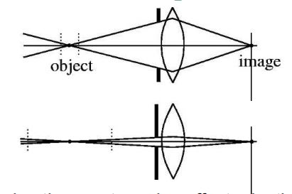
（1）结论：光圈越小，景深越大。
（2）原理解释——容许弥散圆(permission circle of confusion)
·弥散圆定义：物点成像时，由于成像平面与焦点不重合，导致该点的成像光束不能会聚于一点，而是在像平面上形成一个扩散的圆形投影。
·容许弥散圆：半径小于某个临界值，不对成像清晰度带来明显影响的弥散圆称为容许弥散圆。
·物体前后移动相同的距离，若光圈越小，则弥散圆半径的变化量越小。因此，在弥散圆半径达到容许临界值时，更小的光圈对应的景深更大。
[注]光圈较小，会导致入射光不足，需要补充曝光。
2.焦距对视场(Field of View)的影响（理解原理，会画图解释）
【答】
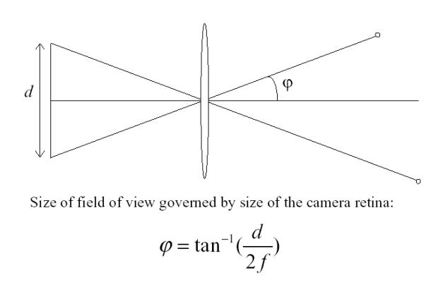
（1）结论：焦距越大，视场越小。
（2）原理解释
·视角\(\phi = tan^{-1}\frac{d}{2f}\)，在\(d\)固定时，焦距越大，视角越小，视场越小。
二、理想的针孔相机（pinhole camera）模型
1.基本投影公式（能画图说明，会推导出公式，并写出齐次坐标形式下的透视投影公式）
【答】
（1）画图说明
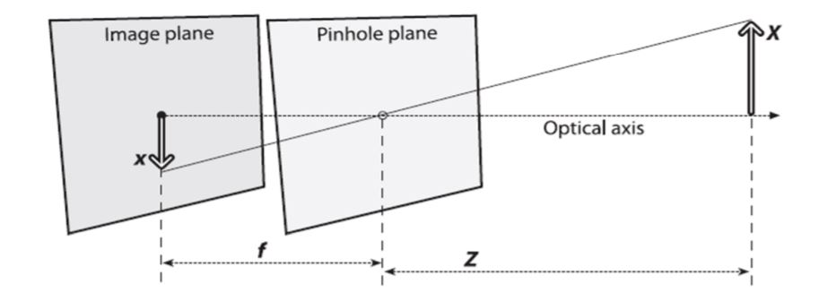
（2）公式推导
\(-\frac{x}{f} = \frac{X}{Z}\rArr x = -f_x\frac{X}{Z} + c_x\)
\(x_{screen} = f_x\frac{Y}{Z} + c_x\)
\(y_{screen} = f_y\frac{X}{Z} + c_y\)
（3）齐次坐标形式下的透视投影公式：
\(q = MQ\)
\(q = \begin{bmatrix}x\\y\\w\end{bmatrix}, M = \begin{bmatrix}f_x \ 0 \ c_x \\ 0 \ f_y \ c_y \\ 0 \ \ 0 \ \ 1\end{bmatrix}, Q = \begin{bmatrix}X \\ Y \\ Z\end{bmatrix}\)
2.投影公式涉及的内参（不包括畸变参数）（会写内参矩阵）
【答】
（1）内参及其含义
相机内参为\((f_x, f_y, c_x, c_y)\)，其中\(f_x, f_y\)分别表示\(x, y\)方向每毫米的像素点数量，\(c_x, c_y\)分别表示\(x, y\)方向的漂移。
（2）内参矩阵
\(M = \begin{bmatrix}f_x \ 0 \ c_x \\ 0 \ f_y \ c_y \\ 0 \ \ 0 \ \ 1\end{bmatrix}\)
3.投影变换——保角、保距、保平行、保共线
【答】
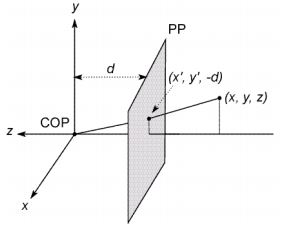
\((x, y, z) \rightarrow (-d\frac{x}{z}, -d\frac{y}{z})\)
据此说明。
4.举例说明齐次坐标的好处
【答】
使用齐次坐标，可以表示平行线在透视空间的无穷远处交于一点；但是欧式坐标不能表示。
5.齐次坐标与笛卡尔坐标之间的换算。
【答】
①非齐次坐标\((x, y)\Leftrightarrow\)齐次坐标\([x, y, 1]^T\)
②非齐次坐标\((x, y, z)\Leftrightarrow\)齐次坐标\([x, y, z, 1]^T\)
③非齐次坐标\((\frac{x}{w}, \frac{y}{w})\Leftrightarrow\)齐次坐标\([x, y, w]^T\)
④非齐次坐标\((\frac{x}{w}, \frac{y}{w}, \frac{z}{w})\Leftrightarrow\)齐次坐标\([x, y, z, w]^T\)
6.给定刚体变换\(Rx + t\)，推导出齐次坐标的矩阵乘形式。
【答】\(R\)是旋转矩阵，\(t\)是平移向量（列向量），通过添加新的维度变成齐次坐标，可以合并两种变换。此时，变换矩阵的右下角元素是\(1\)，左上角矩阵为\(R\)，右上角矩阵为\(t\)。
三、畸变
1.径向畸变与切向畸变各是什么原因引起的？
【答】
（1）径向畸变的原因：光线穿过透镜后，发生偏移。
（2）切向畸变的原因：装配时的误差，导致成像平面(CCD)与透镜不平行。
2.径向畸变常见的有哪两种？
【答】常见的径向畸变有枕形畸变、桶形畸变。
四、相机外参
外参有哪几个？分别代表什么含义？齐次坐标
下的外参矩阵会写、会推导。
【答】
（1）\((\theta , \phi, \psi, t_x, t_y, t_z)\)，分别表示三个方向的旋转角度、三个方向的位移，它们随着环境的变化而变化。
（2）齐次坐标下的外参矩阵：
·旋转矩阵：
\(R = R_z(\theta)R_y(\phi) R_x(\psi)\)
\(R_x(\psi) = \begin{bmatrix}1 \ \ \ \ \ \ \ 0 \ \ \ \ \ \ \ 0 \\
0 \ cos\psi \ sin\psi \\
0 \ -sin\psi \ cos\psi \end{bmatrix}\)
\(R_y(\phi) = \begin{bmatrix}cos\phi \ 0\ -sin\phi \\
0 \ \ \ \ \ \ \ \ 1 \ \ \ \ \ \ \ \ 0 \\
-sin\psi \ 0 \ cos\phi \end{bmatrix}\)
\(R_z(\theta) = \begin{bmatrix}
cos\theta \ sin\theta \ 0 \\
-sin\theta \ cos\theta \ 0 \\
0 \ \ \ \ \ \ \ 0 \ \ \ \ \ \ \ 1 \\\end{bmatrix}\)
·位移向量：\(t_{3 \times 1} = (t_x, t_y, t_z)^T\)
·三维空间中齐次坐标下的外参矩阵：
\(P' = \begin{bmatrix} R_{3 \times 3} \ t_{3 \times 1}\\ 0 \ 0 \ 0 \ 1\end{bmatrix}\)
五、四个坐标系
1.知道相机模型成像过程中涉及的四个坐标系
【答】
相机模型成像过程中涉及的四个坐标系依次是：三维物体坐标系\(\rightarrow\)三维相机坐标系\(\rightarrow\)二维图像平面坐标系\(\rightarrow\)二维像素坐标系。
2.会画图展示内参、外参、畸变参数在成像各阶
段中的角色（从真实的世界坐标到图像坐标的
过程）
【答】
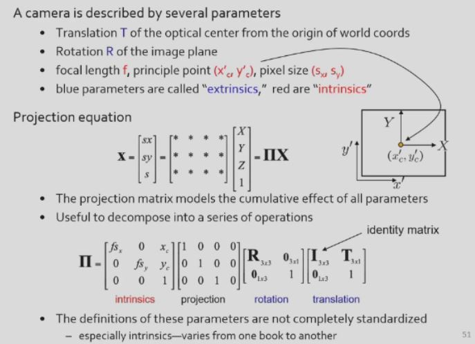
专题——基于Homography的相机定标
1.相机定标(Camera Calibration)的基本思路或思想
【答】
基本思路是：通过对定标参照物拍照，知道参照物角点分别在真实世界、图像空间中的坐标及其对应关系，建立对应关系方程组，从而求解出相机的内参、外参和畸变参数。
2.相机定标的优点
【答】
相机定标可以获得对内参、畸变参数较为精确的估计，对于世界模型重构、与真实世界实现交互十分重要。
（1）基于三维参照物的定标：可以高效实现。
（2）基于平面的定标：灵活、健壮、低成本。
3.基本过程（4个步骤）
【答】
①设置定标参照物，知道参照物的角点在坐标系中的坐标，拍照。
②寻找图像角点。
③根据图像角点、实际角点坐标，建立图像坐标和真实世界坐标的方程组。
④解方程组，获得对内参、外参和畸变参数的估计。
4.Homography矩阵有几个自由度？求解需要至少几
个特征点？
【答】
（1）3 * 3的Homography矩阵有\(H_{33} = 1\)，其余\(8\)个参数待定，有\(8\)个自由度。
（2）由于棋盘格平面上，一个角点可以在\(x, y\)方向分别建立一个correspondence方程，故求解至少需要\(4\)个特征点。
5.根据未知参数的数量，会简单估算需要最少拍几张定标图片。
【答】
①Homography矩阵\(H\)的系数求解
·由于单应性矩阵\(H\)满足\(H_{33} = 1\)，故自由度为\(8\)。
·由于每个点可以分别在\(x, y\)方向提供一个等式，因此最少只需\(4\)个点，即可算出\(H\)矩阵。
②畸变参数（二维几何）计算
·\(3\)个点可以获得\(6\)个约束条件，足以估计\(5\)个参数的值。
·利用更多点进行估计，可以获得更为精确的结果。
③内参+外参（三维几何）计算
·受到单应性矩阵\(H\)的自由度限制，一个视野至多只能算出\(8\)个参数。因此，需要更多的不同视野，以计算内参、外参。
·视野发生变化，则外参会发生变化，增加\(6\)个外参未知数。
·为了内参、外参的成功计算，需满足\(2NK \ge 6K + 4\)，其中\(N\)为角点个数，\(K\)为视野个数。
专题——立体视觉
一、立体视觉的三角测量基本原理
1.会画“视差disparity”的那张图，并自己会辅助线推导深度的计算公式。
【答】
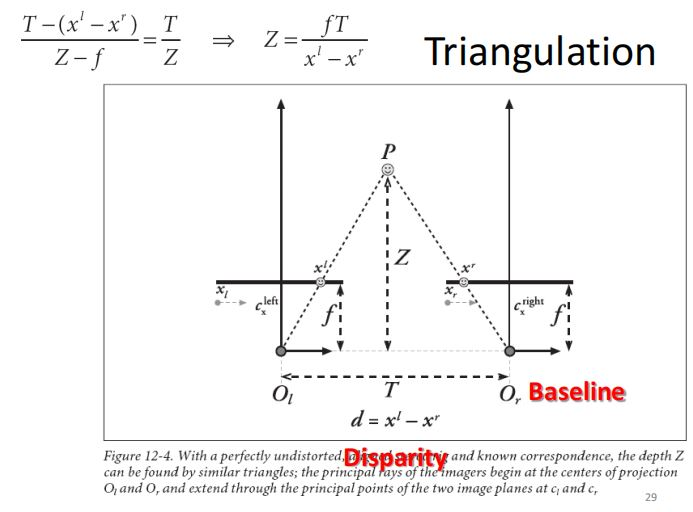
（1）参数的含义
\(d = x^l - x^r\)表示同一点\(P\)在两个相机的成像平面分别成像所得像点的视差(disparity)。
（2）公式推导与理解
·根据相似性原理：\(\frac{Z - f}{T - (x^l - x^r)} = \frac{T}{Z}\)
从而得到物体到相机成像平面的深度值\(Z = \frac{fT}{x^l - x^r}\)
2.根据计算公式，会分析深度分辨率跟哪几个因素有关系；会画图解释。
【答】
\(Z = \frac{fT}{x^l - x^r}\)
理解：
①点\(P\)离成像平面越远，视差越大，导致\(Z = \frac{fT}{x^l - x^r}\)的数值变小，对深度的分辨率越低。
②提高两个相机的距离\(T\)，可以提高对深度的分辨率。
二、立体视觉的步骤
1.简述四个基本步骤（review: How to Do Stereo）： Undistortion、Rectification、Correspondence、Reprojection或triangulation。
【答】
（1）去除畸变(Undistortion) ：去除径向畸变和切向畸变。
（2）校准(Rectification)：通过调整相机拍到的画面，使得两个相机的图像实现行对齐(row-aligned)。
（3）对应(Correspondence)：建立两幅图像的像素点对应关系，计算视差(disparity)。
（4）反投影(reprojection)与三角化(triangulation)，获得depth map。
[注]三角化：假设有两个相机（焦距相同、图像无畸变、光轴平行、距离已知），则某一个三维空间中的点在两张图片上都有位置，可以利用相似原理，计算两张图片的深度信息。
2.Rectification这个步骤的目的是什么？如果不做Rectification，有什么不好？
【答】
（1）目的：通过调整相机拍到的画面，使得两个相机的图像实现行对齐(row-aligned)。
（2）如果不实现行对齐，则进行Stereo matching时需要进行二维匹配，计算开销较大，若实现则只需进行一维匹配；此外，三角化也基于图片实现行对齐的假设进行，若不作行对齐则三角化效果可能很差。
3.怎么理解：通过Stereo matching时，可将原来的2D匹配问题，转化为1D匹配问题。
【答】
①给定一张图中一点，则它在另一张图中的匹配点必定处于相应的极线上。
②一张图的某些像素点在另一张图的对应像素点（correspondence）的搜索只需在对应极线上进行，而不需要进行二维搜索，从而将搜索空间从二维降低到一维。
专题——结构光三维成像原理
一、结构光成像系统
1.结构光成像系统的组成部分。
【答】结构光成像系统的组成部分为：投影仪、相机、深度恢复系统。
2.利用结构光获取三维数据的基本原理
（1）会画图，会做辅助线、推导公式。
（2）搞清楚哪些已知，哪些未知。
【答】
（1）画图：
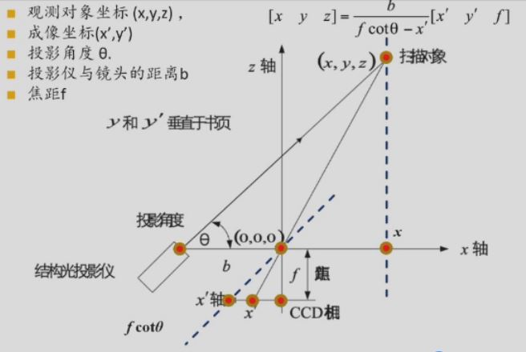
·辅助线有两条：过扫描对象对\(x, y\)轴各作一条辅助线(\(y\)轴垂直于纸面，\(y\)轴辅助线未画出)，过原点作与扫描对象到投影对象连线平行的一条辅助线，设该辅助线和成像平面的角点为\(x''\)。
·公式推导：
利用相似三角形原理（大三角形由投影仪、扫描对象、相机组成；小三角形由\(x''\)、原点和\(x'\)组成），有：
\([x \ y \ z] = \frac{b}{fcot\theta -x'}[x' \ y' \ f]\)
（2）已知：成像坐标\((x', y')\)、投影角度\(\theta\)、投影仪与镜头的距离\(b\)、相机焦距\(f\)；待求未知量：物体的真实三维坐标\((x, y, z)\)。
二、ICP算法
1.该算法用于解决什么问题？
【答】
·单个摄像机构造的结构光系统只能获得一个方向上的三维数据，如果希望得到大于\(180\deg\)范围的三维数据，就需要采用多个投影仪-摄像机组合。
·此时，需要研究如何把多个扫描结果拼接在一起，以形成对扫描对象的完整描述。
2.算法的基本步骤。
【答】
（1）建立两个扫描结果之间点的对应关系。
（2）通过迭代，获得一个仿射变换函数，以描述第（1）步中对应点之间的变换关系。
（3）对扫描结果上的所有点，应用（2）中得到的放射变换函数。
（4）选取两个扫描结果中距离最近的点作为对应点，计算对应点的距离。如果距离大于设定阈值，则继续执行（2）（3）；否则结束。